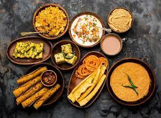

CUISINE
Dhokla
Gujarati thali typically comprises of one or two steamed or fried snacks called farsans, a green vegetable, a tuber or a gourd shaak (shaaks are main courses with vegetables and spices mixed together into a curry or a spicy dry dish), a kathol (braised pulses like beans, chickpea or dry peas), one or more yogurt dishes like dahi, kadhi (yogurt and pulses soup), raita or sweet shrikhand, rice or khichdi, daal usually toor dal, and sweets like halwas, basundi or shrikhand. Accompaniments include sweet, sour and spicy chutneys, pickles, ghee and a salad of chopped vegetables served raw or may be steamed in spices